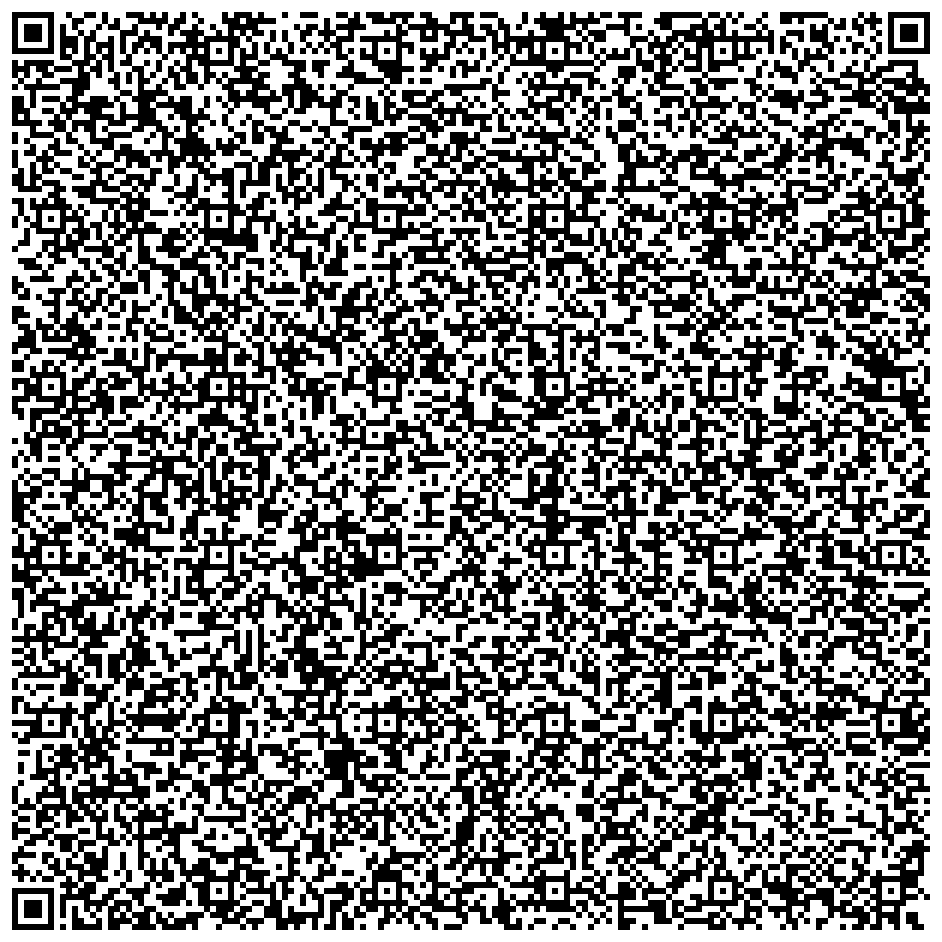

Инструкция по VPN
Белые списки не обходит. Страна только Швеция. Один ключ на одно устройство.
iPhone
Incy- В переписке долго нажмите на ключ и выберите «Скопировать».
- Откройте Incy, вкладка «Подключение», кнопка «Вставить».
- Нажмите круглую кнопку вверху. Если iPhone спросит разрешение, нажмите «Разрешить».
- Правила Incy: откройте incy.routing.help, нажмите «Разрешить», затем выключите VPN и включите снова.
Android, Huawei, Windows
HappПравила только для Happ. Они нужны, чтобы не переключать VPN вручную.
- Скачайте Happ по кнопке выше. В переписке скопируйте ключ. В Happ нажмите «+», затем «Вставить из буфера обмена».
- Если в списке есть звери, нажмите последнее животное и круглую кнопку подключения.
- Откройте routing.help или отсканируйте код ниже в Happ. Нажмите «Разрешить». Happ добавит профиль RoscomVPN.
- Справа от имени нажмите три точки, затем «Маршрутизация». Снова три точки, «Копировать из», затем RoscomVPN.
- Выключите VPN и включите снова.
